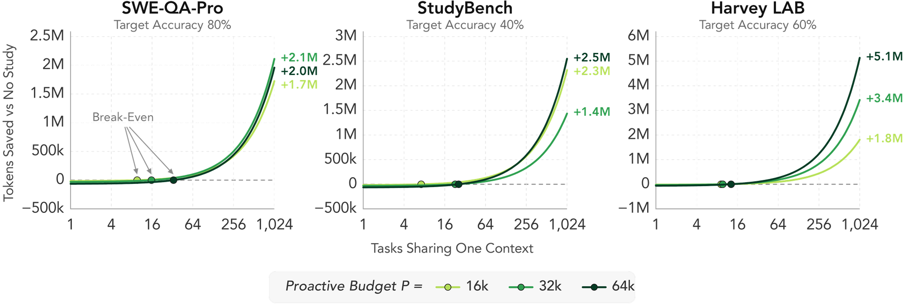

8 min read
Agents sit idle before the task arrives and while their tools run
Test-time compute predictably improves performance [1, 2, 3], but agents usually spend it reactively, generating tokens only after a task or tool result arrives. A reactive agent on MLE-Bench generates tokens for only 5–16% of a two-hour session, even though it already has the context of the task (a code repository, a filesystem) or knows its likely next steps.
Instead, agents can spend compute proactively: they can study the available context before a task arrives [4], or plan ahead while they wait for tool results [5]. This compute can often run while GPUs are otherwise idle, which keeps its cost low. Our contribution is treating proactive compute as a budget to scale precisely. We sweep the proactive study budget from 64 tokens to 128k, split it across agents to go beyond a single context window, and measure how accuracy, latency, and cost change with scale.
Proactive agents use idle time to study the context and plan ahead
In the offline setting, when the agent is waiting for its task, the agent explores the context C before the task q arrives and writes a trace of P tokens, which we call the study. When the task q arrives, the study stays in its history, and the same agent, now the solver, solves the task using T test-time tokens. In the online setting, when the agent is waiting for a tool result, it writes up to P tokens per tool call while the call runs.
We control both budgets exactly with budget forcing [3]. If the model stops early, we tell it to keep going, and if it goes over, we cut it off at our desired budget. We sweep P from 0 to 128k and T from 64 to 64k tokens (k = 1,024). This post shows five benchmarks: two software-engineering benchmarks, SWE-QA-Pro [6] and StudyBench [7]; two algorithmic reasoning benchmarks, ARC-AGI-1 [8] and MIR-Bench [9]; and one legal knowledge-work benchmark, Harvey LAB [10]. The paper adds four math benchmarks [11].
Proactive compute substitutes for test-time compute
Studying helps most when latency (time to answer) is critical and the solver has little budget at test time. With a 128k-token study, DeepSeek-V4-Flash on SWE-QA-Pro reaches at T = 64 the accuracy that it needs about 850 test-time tokens to reach without a study: 13× fewer tokens (72% against 40% at T = 64, 3 seeds). Across the paper’s benchmarks this factor runs from 7× on StudyBench to 221× on AIME 2025.
Test-time efficiency E
Test-time efficiency is the ability to achieve higher accuracy at lower test-time budgets. To summarize the whole accuracy–T curve in a single number, we adapt the expertise metric of Machine Studying [7] and define E as the area under the curve with T on a log scale, normalized by the curve’s width. Each doubling of T counts equally:
where \(T_1 < T_2 < \dots\) are the tested budgets.
Proactive agents save tool calls and thinking tokens while keeping accuracy
With the study in context, the solver makes fewer tool calls: at the largest test budget, a 128k study cuts tool calls by 10× on StudyBench, 4× on SWE-QA-Pro and 1.7× on Harvey LAB. When the solver sets its own budget, a 16k study on SWE-QA-Pro more than halves its thinking and cuts its tool calls tenfold at matched accuracy.
When tasks share a context, proactive compute pays for itself and then can save millions of tokens
When n tasks share one context, each task costs P/n + T*P tokens, where T*P is the test-time budget needed to achieve a certain performance given a study of budget P. Longer studies take more tasks to break even (7–10 tasks at 16k, against 13–33 at 64k), and they usually save more afterwards.

Structured, multi-agent studying scales proactive compute past one context window
Harvey LAB is a 134M-token filesystem of legal matters from a fictitious law firm [10], which far exceeds the size of one context window. A wiki-style study, prompted to explore as if building a wiki over the filesystem, is more efficient than a plain study at every budget (E ≈ 0.47 against 0.40). To go past one context window, we spread the study over multiple agents with 131k tokens each, in parallel over partitions of the filesystem or serially with notes passed along, similar to compaction. With eight parallel agents, the study reaches E = 0.585, against 0.458 for RAG [12] and 0.515 for RLM [13]. A cheap hierarchical summary, which reads the opening of each document and writes one page per folder, does as well (E = 0.589) at under a third of the cost ($0.41 against $1.36).
Agents that work while commands run beat the median human 2× sooner
On eight MLE-Bench tasks [14], an agent works in a shell for two hours on a single B200. While a command runs, the proactive agent keeps working for up to 1k, 4k or 16k tokens; the reactive agent sits idle. We compare each agent against the median score of the human Kaggle entrants on the task. Half of the 16k agent’s sessions beat it after 24 minutes, compared to 49 minutes for the reactive agent, partly because it submits its first valid file sooner (11 against 25 minutes). This speed-up also costs tokens: to reach the median human’s score, the 16k agents generate about 1.7× as many tokens as the reactive agents do.
The 16k agents spend 32% of the session generating tokens, while reactive agents sit at 10%. The 16k agents are still idle 68% of the time: 16k tokens take about two minutes to generate, while a command runs for 7.5 minutes on average.
A future full of proactive agents
Proactive compute lets an agent prepare for a task before it arrives and keep working while its tools run. The gains scale with the proactive budget, pay for themselves when tasks share a context, and extend beyond one context window with multiple agents. As agents run for days and supervise tool calls that take minutes to hours, the time they spend waiting keeps growing, and so does the room for proactive compute. Many questions remain open, such as how to update a study as the context changes, how to tell when a study has done enough, and how much training can improve an agent’s studying.
Looking forward, we envision more proactive agents that live in their environments, from codebases and file systems to shared workspaces and the web. Such agents can spend the time between requests, and the time they wait on their tools, getting to know their environment and anticipating what comes next, so that they are ready before they are asked.
Why does a study help, and how small can it get before it stops helping? See the paper for the full results.
BibTeX
@misc{talaei2026proactive,
title = {Scaling Proactive Compute: When Agents Anticipate the Task},
author = {Talaei, Shayan and Chiaranaipanich, Gino and Zeinali, Amirreza and
Youssefi, Amir and Mirhoseini, Azalia and Saberi, Amin},
year = {2026},
url = {https://arxiv.org/abs/XXXX.XXXXX}
}Acknowledgements
TBD
References
- Brown et al. (2024). Large Language Monkeys: Scaling Inference Compute with Repeated Sampling.
- Snell et al. (2024). Scaling LLM Test-Time Compute Optimally Can Be More Effective than Scaling Model Parameters.
- Muennighoff et al. (2025). s1: Simple Test-Time Scaling.
- Lin et al. (2025). Sleep-time Compute: Beyond Inference Scaling at Test-time. arXiv:2504.13171.
- Choi et al. (2026). IdleSpec: Exploiting Idle Time via Speculative Planning for LLM Agents. arXiv:2605.22154.
- Cai et al. (2026). SWE-QA-Pro: A Representative Benchmark and Scalable Training Recipe for Repository-Level Code Understanding. arXiv:2603.16124.
- Li et al. (2026). Machine Studying.
- Chollet (2019). On the Measure of Intelligence. arXiv:1911.01547.
- Yan et al. (2025). MIR-Bench: Can Your LLM Recognize Complicated Patterns via Many-Shot In-Context Reasoning? arXiv:2502.09933.
- Grupen et al. (2026). Open-Sourcing Harvey's Long Horizon Legal Agent Benchmark.
- Balunović et al. (2026). MathArena: Evaluating LLMs on Uncontaminated Math Competitions. arXiv:2505.23281.
- Lewis et al. (2021). Retrieval-Augmented Generation for Knowledge-Intensive NLP Tasks. arXiv:2005.11401.
- Zhang et al. (2025). Recursive Language Models. arXiv:2512.24601.
- Chan et al. (2025). MLE-bench: Evaluating Machine Learning Agents on Machine Learning Engineering. arXiv:2410.07095.